Repair Procedures
Inspection
1. Ignition "OFF"
2. Disconnect the connector of mode control actuator.
3. Verify that the mode control actuator operates to the defrost mode when connecting 12V to the terminal 3and grounding terminal 7.
4. Verify that the mode control actuator operates to the vent mode when connecting in the reverse.
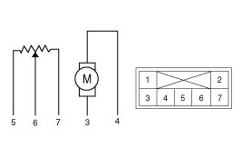
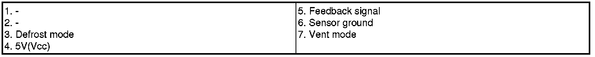
5. Check the voltage between terminals 5 and 6.
It will feedback current position of actuator to controls.
6. If the measured voltage is not specification, substitute with a known-good mode control actuator and check for proper operation.
7. If the problem is corrected, replace the mode control actuator.
Replacement
1. Disconnect the negative (-) battery terminal.
2. Using the screwdriver, remove the center garnish (A).
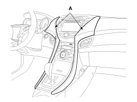
3. Loosen the mounting remove the console upper cover (A).
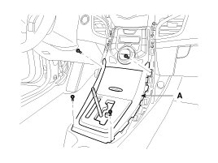
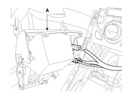
4. Remove the center console assembly.
5. Loosen the mounting nut and clip remove the extension cover (A).
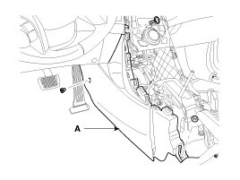
6. Remove the side cover (A).
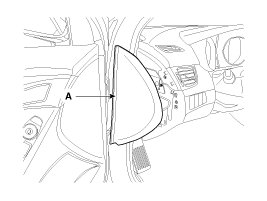
7. Disconnect the fuse box cover (A).
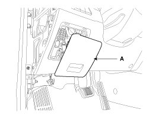
8. Loosen the mounting screw and then remove the crash pad lower cover (B).
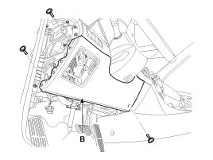
9. Disconnect the diagnosis connector (A).
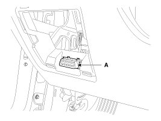
10. After loosening the mounting bolts, then remove the reinforce panel (A).
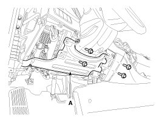
11. Remove the shower duct (A).
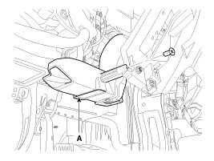
12. Disconnect the temperature control actuator connector (A).
13. Loosen the mounting screw and then remove the temperature control actuator (B).
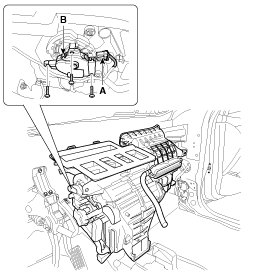
14. Installation is the reverse order of removal.